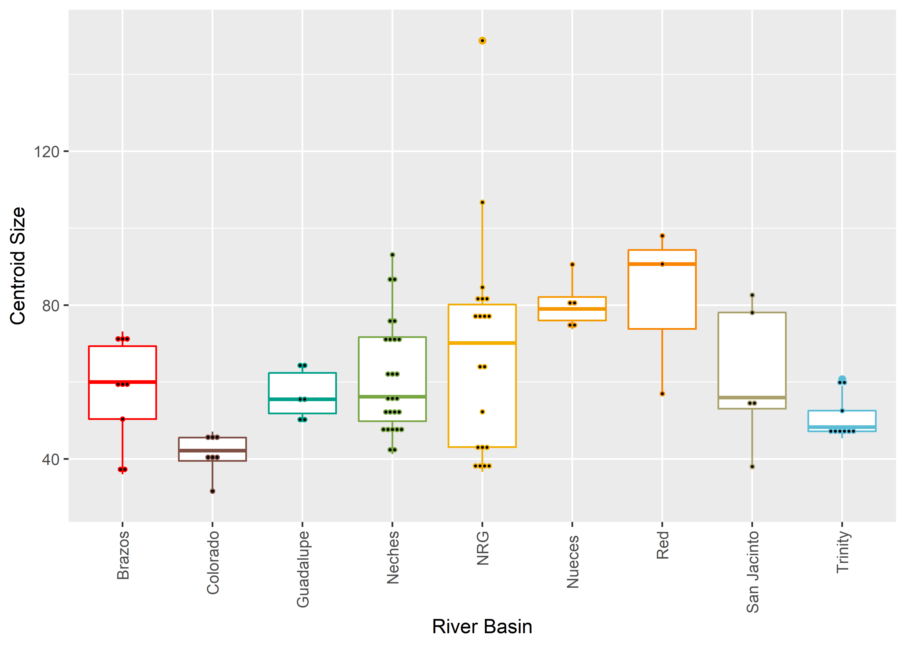
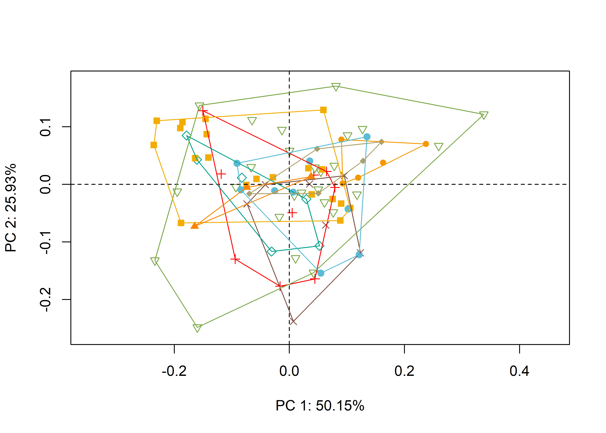

Chapter 3 River basins
library(here)
library(StereoMorph)
library(geomorph)
library(wesanderson)
library(ggplot2)3.1 Read data and define sLMs
shapes <- readShapes("shapes")
shapesGM <- readland.shapes(shapes, nCurvePts = c(10, 10, 10, 10))3.2 Read qualitative data
qdata <- read.csv("qdata.csv",
header = TRUE,
row.names = 1)3.3 Generalised Procrustes Analysis
Landmark data were aligned to a global coordinate system (Kendall 1981, 1984; Slice 2001), achieved through generalised Procrustes superimposition (Rohlf and Slice 1990) performed in R 4.0.4 (R Core Development Team, 2020) using the geomorph library v. 3.3.2 (Adams et al. 2017; Adams and Otárola-Castillo 2013). Procrustes superimposition translates, scales, and rotates the coordinate data to allow for comparisons among objects (Gower 1975; Rohlf and Slice 1990). The geomorph package uses a partial Procrustes superimposition that projects the aligned specimens into tangent space subsequent to alignment in preparation for the use of multivariate methods that assume linear space (Rohlf 1999; Slice 2001).
Y.gpa <- gpagen(shapesGM, print.progress = FALSE)
plot(Y.gpa)
# dataframe
gdf <- geomorph.data.frame(shape = Y.gpa$coords,
size = Y.gpa$Csize,
river = qdata$river)
# add centroid size to qdata
qdata$csz <- Y.gpa$Csize
# revised table of attributes
knitr::kable(qdata,
align = "lccc",
caption = "Attributes of Perdiz arrow points included in the sample.")| county | region | river | csz | |
|---|---|---|---|---|
| perdiz007 | McLennan | blackland prairies | Brazos | 69.35797 |
| perdiz029d | milam | blackland prairies | Brazos | 73.14749 |
| perdiz029g | milam | blackland prairies | Brazos | 58.52238 |
| perdiz011 | lampass | edwards plateau | Brazos | 70.84758 |
| perdiz010 | hamilton | oak woods and parairies | Brazos | 60.02730 |
| perdiz012a | burleson | oak woods and parairies | Brazos | 60.43875 |
| perdiz012c | burleson | oak woods and parairies | Brazos | 50.37065 |
| perdiz014 | lee | oak woods and parairies | Brazos | 38.60532 |
| perdiz018 | burleson | oak woods and parairies | Brazos | 36.04801 |
| perdiz003 | bosque | blackland prairies | Colorado | 31.63170 |
| perdiz001a | kimble | edwards plateau | Colorado | 38.73303 |
| perdiz001b | kimble | edwards plateau | Colorado | 42.18146 |
| perdiz001c | kimble | edwards plateau | Colorado | 40.21831 |
| perdiz002 | kimble | edwards plateau | Colorado | 46.89038 |
| perdiz004e | kimble | edwards plateau | Colorado | 47.12634 |
| perdiz004g | kimble | edwards plateau | Colorado | 44.19071 |
| perdiz028d | guadalupe | blackland prairies | Guadalupe | 49.62448 |
| perdiz015 | comal | edwards plateau | Guadalupe | 50.95445 |
| perdiz016 | hays | edwards plateau | Guadalupe | 54.49649 |
| perdiz017a | hays | edwards plateau | Guadalupe | 56.57031 |
| perdiz017d | hays | edwards plateau | Guadalupe | 64.34497 |
| perdiz017f | hays | edwards plateau | Guadalupe | 64.37136 |
| perdiz020a | nacogdoches | piney woods | Neches | 71.34271 |
| perdiz020b | nacogdoches | piney woods | Neches | 56.62909 |
| perdiz020c | nacogdoches | piney woods | Neches | 53.55270 |
| perdiz021a | nacogdoches | piney woods | Neches | 48.91144 |
| perdiz021b | nacogdoches | piney woods | Neches | 46.08079 |
| perdiz021c | nacogdoches | piney woods | Neches | 61.28651 |
| perdiz021d | nacogdoches | piney woods | Neches | 77.02208 |
| perdiz021e | nacogdoches | piney woods | Neches | 74.75191 |
| perdiz021f | nacogdoches | piney woods | Neches | 49.62793 |
| perdiz021g | nacogdoches | piney woods | Neches | 50.87638 |
| perdiz021h | nacogdoches | piney woods | Neches | 43.59739 |
| perdiz021i | nacogdoches | piney woods | Neches | 70.21314 |
| perdiz022h | smith | piney woods | Neches | 72.06248 |
| perdiz022i | smith | piney woods | Neches | 46.88491 |
| perdiz022j | smith | piney woods | Neches | 50.39119 |
| perdiz022k | smith | piney woods | Neches | 54.06644 |
| perdiz022L | smith | piney woods | Neches | 55.79778 |
| perdiz022m | smith | piney woods | Neches | 54.92731 |
| perdiz023a | smith | piney woods | Neches | 71.77669 |
| perdiz023b | smith | piney woods | Neches | 41.21730 |
| perdiz023c | smith | piney woods | Neches | 62.83886 |
| perdiz023e | smith | piney woods | Neches | 62.86062 |
| perdiz023f | smith | piney woods | Neches | 45.75886 |
| perdiz023g | smith | piney woods | Neches | 84.92990 |
| perdiz024j | smith | piney woods | Neches | 88.53429 |
| perdiz025c | smith | piney woods | Neches | 93.11325 |
| perdiz008cap | uvalde | edwards plateau | Nueces | 73.68651 |
| perdiz008iap | uvalde | edwards plateau | Nueces | 76.01294 |
| perdiz008oap | uvalde | edwards plateau | Nueces | 90.56510 |
| perdiz008pap | uvalde | edwards plateau | Nueces | 82.10799 |
| perdiz008x | uvalde | edwards plateau | Nueces | 79.06205 |
| perdiz005a | JW, hinojosa site | gulf coast prairies and marshes | NRG | 84.65951 |
| perdiz005b | JW, hinojosa site | gulf coast prairies and marshes | NRG | 83.23678 |
| perdiz005c | JW, hinojosa site | gulf coast prairies and marshes | NRG | 106.71703 |
| perdiz005e | JW, hinojosa site | gulf coast prairies and marshes | NRG | 148.79264 |
| perdiz005g | JW, hinojosa site | gulf coast prairies and marshes | NRG | 38.75136 |
| perdiz005h | JW, hinojosa site | gulf coast prairies and marshes | NRG | 43.52312 |
| perdiz005i | JW, hinojosa site | gulf coast prairies and marshes | NRG | 39.80383 |
| perdiz005j | JW, hinojosa site | gulf coast prairies and marshes | NRG | 36.64441 |
| perdiz005k | JW, hinojosa site | gulf coast prairies and marshes | NRG | 38.71038 |
| perdiz005L | JW, hinojosa site | gulf coast prairies and marshes | NRG | 41.86583 |
| perdiz005o | JW, hinojosa site | gulf coast prairies and marshes | NRG | 78.64626 |
| perdiz005q | JW, hinojosa site | gulf coast prairies and marshes | NRG | 78.28938 |
| perdiz005r | JW, hinojosa site | gulf coast prairies and marshes | NRG | 80.12793 |
| perdiz005t | JW, hinojosa site | gulf coast prairies and marshes | NRG | 77.31495 |
| perdiz005u | JW, hinojosa site | gulf coast prairies and marshes | NRG | 80.30418 |
| perdiz005x | JW, hinojosa site | gulf coast prairies and marshes | NRG | 63.26502 |
| perdiz006a | JW, hinojosa site | gulf coast prairies and marshes | NRG | 44.17576 |
| perdiz006b | JW, hinojosa site | gulf coast prairies and marshes | NRG | 75.65424 |
| perdiz006g | JW, hinojosa site | gulf coast prairies and marshes | NRG | 64.72616 |
| perdiz006h | JW, hinojosa site | gulf coast prairies and marshes | NRG | 52.29545 |
| perdiz030h | camp | piney woods | Red | 56.99188 |
| perdiz030i | camp | piney woods | Red | 90.67431 |
| perdiz031a | camp | piney woods | Red | 98.02555 |
| perdiz033f | harris | gulf coast prairies and marshes | San Jacinto | 78.09832 |
| perdiz033g | harris | gulf coast prairies and marshes | San Jacinto | 38.07038 |
| perdiz033h | harris | gulf coast prairies and marshes | San Jacinto | 53.05908 |
| perdiz033i | harris | gulf coast prairies and marshes | San Jacinto | 55.97309 |
| perdiz033k | harris | gulf coast prairies and marshes | San Jacinto | 82.63957 |
| rep02a | navarro | blackland prairies | Trinity | 47.20311 |
| rep02b | navarro | blackland prairies | Trinity | 47.91456 |
| rep02c | navarro | blackland prairies | Trinity | 52.54670 |
| rep02e | navarro | blackland prairies | Trinity | 59.06926 |
| rep02k | navarro | blackland prairies | Trinity | 60.77844 |
| rep05i | navarro | blackland prairies | Trinity | 45.39655 |
| rep018f | collin | blackland prairies | Trinity | 48.29525 |
| smu03 | navarro | edwards plateau | Trinity | 47.19561 |
| rep06 | freestone | oak woods and parairies | Trinity | 49.07271 |
3.4 Boxplot
# attributes
csz <- qdata$csz
river <- qdata$river
# palette
pal = wes_palette("Darjeeling1", 9, type = "continuous")
# boxplot of Perdiz arrow points by river
csz.riv <- ggplot(qdata, aes(x = river, y = csz, color = river)) +
geom_boxplot() +
geom_dotplot(binaxis = 'y', stackdir = 'center', dotsize = 0.3) +
scale_color_manual(values = pal) +
theme(legend.position = "none") +
theme(axis.text.x = element_text(angle = 90, vjust = 0.5, hjust=1)) +
labs(x = 'River Basin', y = 'Centroid Size')
# render plot
csz.riv## `stat_bindot()` using `bins = 30`. Pick better value with `binwidth`.
3.5 Principal Components Analysis
Principal components analysis (Jolliffe 2002) was used to visualise shape variation among the bottles. The shape changes described by each principal axis are commonly visualised using thin-plate spline warping of a reference 3D mesh (Klingenberg 2013; Sherratt et al. 2014).
# pca
pca <- gm.prcomp(Y.gpa$coords)
summary(pca)##
## Ordination type: Principal Component Analysis
## Centering by OLS mean
## Orthogonal projection of OLS residuals
## Number of observations: 90
## Number of vectors 72
##
## Importance of Components:
## Comp1 Comp2 Comp3 Comp4 Comp5 Comp6 Comp7 Comp8
## Eigenvalues 0.01345356 0.00695622 0.00209410 0.001188054 0.0007594215 0.0005583373 0.0003995824 0.0002091078
## Proportion of Variance 0.50145329 0.25927844 0.07805316 0.044282195 0.0283058381 0.0208108468 0.0148935932 0.0077940521
## Cumulative Proportion 0.50145329 0.76073174 0.83878490 0.883067090 0.9113729285 0.9321837753 0.9470773686 0.9548714206
## Comp9 Comp10 Comp11 Comp12 Comp13 Comp14 Comp15
## Eigenvalues 0.0001784841 0.0001402505 0.0001212374 0.000114692 8.688374e-05 7.212721e-05 6.808985e-05
## Proportion of Variance 0.0066526201 0.0052275415 0.0045188670 0.004274901 3.238408e-03 2.688390e-03 2.537906e-03
## Cumulative Proportion 0.9615240407 0.9667515822 0.9712704491 0.975545351 9.787838e-01 9.814721e-01 9.840101e-01
## Comp16 Comp17 Comp18 Comp19 Comp20 Comp21 Comp22
## Eigenvalues 5.285516e-05 4.937993e-05 4.237572e-05 3.487014e-05 2.863019e-05 2.478305e-05 2.147497e-05
## Proportion of Variance 1.970065e-03 1.840533e-03 1.579466e-03 1.299711e-03 1.067130e-03 9.237359e-04 8.004341e-04
## Cumulative Proportion 9.859801e-01 9.878207e-01 9.894001e-01 9.906998e-01 9.917670e-01 9.926907e-01 9.934911e-01
## Comp23 Comp24 Comp25 Comp26 Comp27 Comp28 Comp29
## Eigenvalues 1.958908e-05 1.777135e-05 1.634014e-05 1.345601e-05 1.140867e-05 1.125551e-05 9.694203e-06
## Proportion of Variance 7.301418e-04 6.623895e-04 6.090441e-04 5.015444e-04 4.252343e-04 4.195253e-04 3.613310e-04
## Cumulative Proportion 9.942213e-01 9.948837e-01 9.954927e-01 9.959942e-01 9.964195e-01 9.968390e-01 9.972003e-01
## Comp30 Comp31 Comp32 Comp33 Comp34 Comp35 Comp36
## Eigenvalues 9.190326e-06 8.450803e-06 6.592543e-06 6.362872e-06 5.985302e-06 5.133395e-06 4.584442e-06
## Proportion of Variance 3.425500e-04 3.149859e-04 2.457231e-04 2.371626e-04 2.230895e-04 1.913365e-04 1.708754e-04
## Cumulative Proportion 9.975429e-01 9.978579e-01 9.981036e-01 9.983408e-01 9.985639e-01 9.987552e-01 9.989261e-01
## Comp37 Comp38 Comp39 Comp40 Comp41 Comp42 Comp43
## Eigenvalues 3.932451e-06 3.691524e-06 3.369619e-06 2.411532e-06 2.363986e-06 2.015085e-06 1.772709e-06
## Proportion of Variance 1.465738e-04 1.375938e-04 1.255955e-04 8.988479e-05 8.811260e-05 7.510806e-05 6.607400e-05
## Cumulative Proportion 9.990726e-01 9.992102e-01 9.993358e-01 9.994257e-01 9.995138e-01 9.995889e-01 9.996550e-01
## Comp44 Comp45 Comp46 Comp47 Comp48 Comp49 Comp50
## Eigenvalues 1.359184e-06 1.252943e-06 1.015789e-06 8.497379e-07 8.277307e-07 6.300739e-07 5.704159e-07
## Proportion of Variance 5.066070e-05 4.670082e-05 3.786141e-05 3.167219e-05 3.085192e-05 2.348468e-05 2.126105e-05
## Cumulative Proportion 9.997057e-01 9.997524e-01 9.997902e-01 9.998219e-01 9.998528e-01 9.998762e-01 9.998975e-01
## Comp51 Comp52 Comp53 Comp54 Comp55 Comp56 Comp57
## Eigenvalues 5.206958e-07 3.750040e-07 3.434621e-07 2.617828e-07 2.206153e-07 1.822164e-07 1.694689e-07
## Proportion of Variance 1.940784e-05 1.397748e-05 1.280183e-05 9.757403e-06 8.222972e-06 6.791731e-06 6.316596e-06
## Cumulative Proportion 9.999169e-01 9.999309e-01 9.999437e-01 9.999534e-01 9.999617e-01 9.999685e-01 9.999748e-01
## Comp58 Comp59 Comp60 Comp61 Comp62 Comp63 Comp64
## Eigenvalues 1.344732e-07 1.148311e-07 1.023667e-07 6.966027e-08 5.465190e-08 4.540919e-08 4.189217e-08
## Proportion of Variance 5.012206e-06 4.280086e-06 3.815502e-06 2.596440e-06 2.037035e-06 1.692532e-06 1.561442e-06
## Cumulative Proportion 9.999798e-01 9.999841e-01 9.999879e-01 9.999905e-01 9.999925e-01 9.999942e-01 9.999958e-01
## Comp65 Comp66 Comp67 Comp68 Comp69 Comp70 Comp71
## Eigenvalues 3.283774e-08 2.372901e-08 1.809048e-08 1.728649e-08 1.445935e-08 7.102140e-09 1.482179e-15
## Proportion of Variance 1.223958e-06 8.844489e-07 6.742846e-07 6.443176e-07 5.389417e-07 2.647173e-07 5.524511e-14
## Cumulative Proportion 9.999970e-01 9.999979e-01 9.999986e-01 9.999992e-01 9.999997e-01 1.000000e+00 1.000000e+00
## Comp72
## Eigenvalues 5.217549e-34
## Proportion of Variance 1.944731e-32
## Cumulative Proportion 1.000000e+00# set plot parameters
pch.gps <- c(3:6,15:19)[as.factor(river)]
col.gps <- pal[as.factor(river)]
col.hull <- c("#FF0000","#7F5045","#00A08A" ,"#79A645","#F59800","#F2AD00","#F98400","#AAA06B","#5BBCD6")
# pca plot
pc.plot <- plot(pca,
asp = 1,
pch = pch.gps,
col = col.gps)
shapeHulls(pc.plot,
groups = river,
group.cols = col.hull)